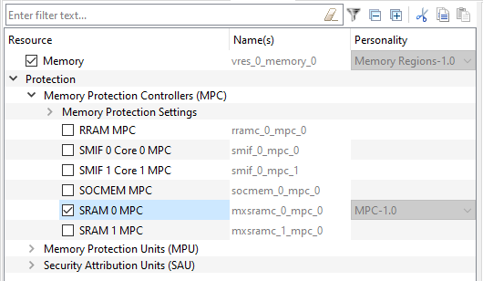
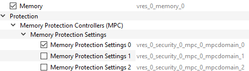
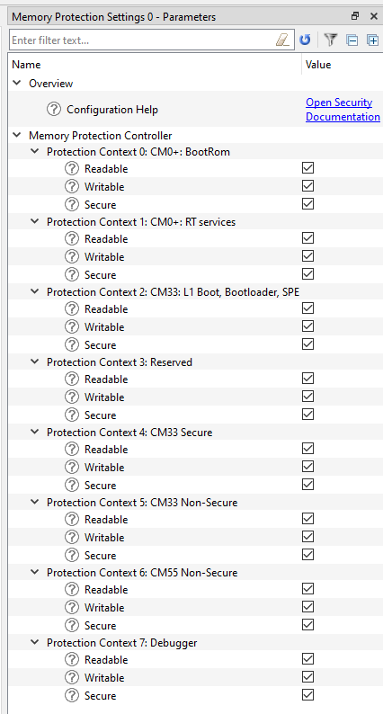
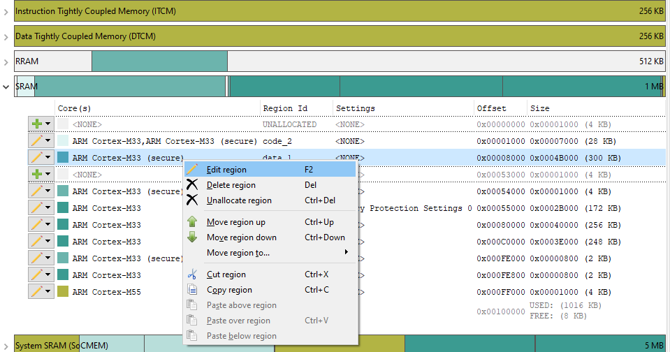
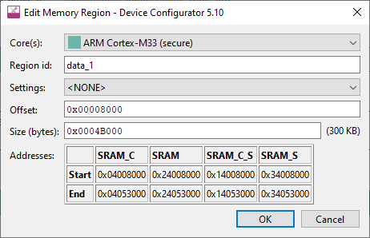
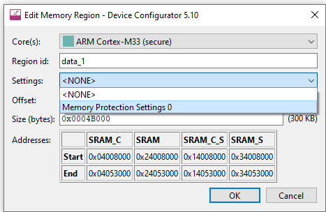
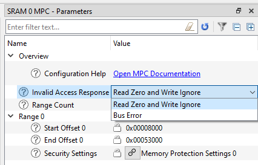

SAU (Security Attribution Units)
The Security Attribution Units (SAU) personality allows you to configure SAU security settings for device memory:
After enabling a region and adding 'Base Address' and 'End Address' for a particular SAU region, you will need to configure if that memory is ‘Non-Secure’ or ‘Non-Secure Callable’.
By default, all memory is ‘Secure’; and non-secure code can not access it or call functions stored in this memory. By configuring the memory to be ‘Non-Secure Callable’, it grants non-secure code permission to only call and execute functions stored in this memory. Configuring memory to be ‘Non-Secure’ grants non-secure code permission to read and/or modify this memory and in addition to executing code.
The SAU personality is available in Secure cores. After configuring region(s), when saved, the Device Configurator generates a file ‘cycfg_sau.h’ with the function Cy_SauInit(void) for SAU configuration. This function has to be called from the secure core main() function.
MPU (Memory Protection Units)
The Memory Protection Units (MPU) personality is available for each core:
Each MPU has 8 regions that can be created and configured.
After enabling a MPU region, the ‘Base Address’ and ‘End Address’ should be configured. After that, there are a few options for region security:
- 'Privileged Access only' – if marked, only privileged code (supervisor) can access this region.
- ‘Writable’ – configures if this memory can be written to. If not set – this region is read-only.
- ‘Executable’ – specifies if the code stored in this region can be executed.
- ‘Device Memory’: – sets either whether this memory is device peripherals or not. If not set, next options are available:
- ‘Non-Cacheable’: This option disables caching for the memory region. Every read or write to this region is directly sent to the memory or peripheral without involving the cache. Non-cacheable memory is often used for memory-mapped I/O (e.g., peripheral registers) where caching can cause stale data or delayed writes.
- Note: The ‘Cacheable’ parameter is used to indicate to the hardware that the data in an MPU region might be cached, not necessarily that it is cached. Selecting an option other than ‘Non-Cacheable’ for a memory region that is inherently non-cacheable, such as the ITCM/DTCM memory regions, will be treated as if the Non-Cacheable option is the selected option.
- ‘Write-Back Non-Transient’: In write-back caching, data writes are first stored in the cache. The data is written back to the main memory only when necessary (e.g., when the cache block is replaced). The term non-transient indicates that this cache line is expected to remain valid over time and isn’t just for temporary use. In write-back caching, data writes are first stored in the cache. The data is written back to the main memory only when necessary (e.g., when the cache block is replaced). The term non-transient indicates that this cache line is expected to remain valid over time and isn’t just for temporary use.
- ‘Write-Back Transient’: Similar to write-back non-transient, but this option is intended for data that is only expected to be in the cache for a short time (i.e., transient data). The cached data is written back to memory only when necessary. This option is suitable for temporary data or buffers that are not frequently reused and can be safely evicted from the cache.
- ‘Write-Through Non-Transient’: In write-through caching, every write to the cache is immediately mirrored (written through) to the main memory. Non-transient indicates that the data will remain relevant over time. This is useful when you need to ensure that memory always has the most up-to-date data, but still want to take advantage of cache reads. This setting is typically used for important data that should not be lost even if the cache is flushed.
- ‘Write-Through Transient’: As with write-through non-transient, every write operation is immediately reflected in the main memory. The transient part suggests that this data is temporary and is likely to be replaced soon. This is typically used for short-lived data, where you want to ensure consistency between the cache and memory but expect the data to be replaced or discarded soon.
If set, next options are available:
- ‘Device-nGnRnE’: No Gathering, No Reordering, No Early Acknowledgment. This is the strictest option, ensuring that memory accesses happen exactly as issued, with no optimizations. This is ideal for device memory where the timing and order of transactions are critical.
- ‘Device-nGnRE’: No Gathering, No Reordering, Early Acknowledgment. Early write acknowledgment is allowed, meaning the processor can continue executing after writing to the device memory without waiting for the write to complete. This can be beneficial for performance but may not be suitable for all devices.
- ‘Device-nGRE’: No Gathering, Reordering allowed, Early Acknowledgment. This allows for reordering and early acknowledgment, which may improve performance but sacrifices the strict control over memory access order and timing that is usually needed for device memory.
- ‘Device-GRE’: Gathering, Reordering, Early Acknowledgment. This is the most relaxed setting, allowing the processor to optimize memory transactions heavily. This is generally not suitable for most device memory interactions where precise control over access is needed.
After saving, the settings will be generated to cycfg_mpu_cm33_s_0.c file for secure MPU or cycfg_mpu_cm33_ns_0.c/ cycfg_mpu_cm55_ns_0.c for non-secure cores in GeneratedSource folder.
To apply then call Cy_MpuInit_cm33_ns_0()/Cy_MpuInit_cm55_ns_0()/Cy_MpuInit_cm33_s_0() function.
MPC
The Memory Protection Controllers (MPC) personality allows you to configure MPC security settings for device memory:
You can configure MPC settings for each memory block that are in the device and integrated to the Memory Configurator.

To protect any available memory, enable MPC of the memory that is in question (SRAM 0 in this example). Select any free Memory Protection slot:

Then, configure it by selecting if each Protection Context should read and/or write to the region, and if this region should be accessible by secure code only:

Once done, open the Memory tab of the Device Configurator and add a new or edit an existing memory region in memory that was selected before:


In the Settings list, select the "Memory Protection" that was enabled and configured in the previous step, and click OK. It will prompt you to save if not saved before.

Once done, go back to the SRAM 0 MPC configuration:

Region 0 was created with Start Offset and End Offset filled in with offsets specified for that particular block. Also, the Security Settings option has been set selected. The personality has only one editable parameter: Invalid Access Response. It configures what should happen if any access occurs from the code in improper Protection Context or, for example, if the code attempts to write to the memory that was marked as read only. The MPC can either ignore that or cause a Bus Error. This will cause a generation array of MPC structures and MPC parameters to be generated and can be applied from secure core only:
for (uint8_t i = 0U; i < mxsramc_0_mpc_0_REGION_NUMBER; i++)
{
}
cy_en_mpc_status_t Cy_Mpc_ConfigRotMpcStruct(MPC_Type *base, const cy_stc_mpc_rot_cfg_t *rotConfig)
Initializes the referenced mpc by setting the PC, NS/S and RW/R/W permissions.
Definition: cy_mpc.c:141
cy_en_mpc_status_t Cy_Mpc_SetViolationResponse(MPC_Type *base, bool mpcResponse)
Set MPC Violation Response.
Definition: cy_mpc.c:712
The list of MPC configuration structures is located in cycfg_memory.c file in the GeneratedSource folder with cycfg_memory.h containing #defines. For every MPC region, there are 8 configuration structures generated for every Protection Context.